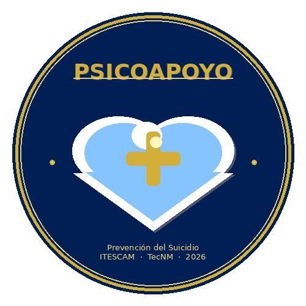

Esta plataforma está diseñada para familias, amigos y personas cercanas que quieren apoyar a alguien en crisis emocional, así como para quienes atraviesan ese momento difícil directamente.
Fuentes: INEGI — Estadísticas de Defunciones Registradas 2024 (cifras preliminares) & OMS 2024
registrados en 2024 — el dato más reciente del INEGI
tasa nacional en México 2024 — supera el 5.1 de 2014
el grupo más afectado en México según CONASAMA
en el mundo cada año, según la OMS — una cada 40 seg.
Yucatán: 16.2 casos/100,000 hab. — tercera tasa más alta del país (INEGI 2024)
Esta plataforma está pensada para tres tipos de usuarios. Todos son bienvenidos.
Padres, hermanos, parejas o cualquier familiar que nota señales de alarma en un ser querido y no sabe cómo actuar o a dónde acudir.
Amigos, compañeros o colegas que quieren apoyar a alguien que está pasando por un momento difícil y necesitan orientación.
Quienes atraviesan directamente una situación de riesgo emocional y buscan apoyo, orientación o contacto con un profesional.

Somos PsicoApoyo, una plataforma digital desarrollada por el equipo TacoCoders del Instituto Tecnológico Superior de Calkiní (ITESCAM), en colaboración con la Psicóloga Eliza de la Torre.
Nuestro objetivo es centralizar información, recursos y apoyo profesional para la prevención del suicidio. Entendemos que muchas veces son los familiares y amigos quienes primero notan que algo no está bien, y no saben a dónde acudir ni qué decir.
Aquí encontrarás herramientas para evaluar el estado emocional de un ser querido, guías para hablar del tema con seguridad, y contacto directo con psicólogos especializados.
Puedes usar la evaluación emocional para ti mismo o para orientarte sobre el estado de alguien más. El sistema indicará el nivel de riesgo y qué pasos tomar.
Recursos de bienestar, autocuidado y hábitos saludables para mantener el equilibrio emocional.
Señales de alerta, guías para familiares y recursos para buscar orientación profesional a tiempo.
Líneas de emergencia, pasos inmediatos para familiares y contacto directo con un psicólogo.
Según CONASAMA y el INEGI (datos 2024) — conocer los factores de riesgo permite actuar a tiempo
Abuso físico, psicológico o sexual, acoso escolar (bullying) y divorcios conflictivos mal manejados son los principales factores de riesgo.
Problemas con pares, decepciones amorosas, problemas familiares y consumo temprano de alcohol o drogas. El 52% de los casos en México ocurren en este grupo.
Crisis económica, infidelidad, mal manejo de emociones y problemas de pareja. La tasa más alta está en hombres de 30 a 44 años (18.8 por 100,000 hab.).
📌 Dato clave OMS: Por cada suicidio consumado, se estima que hay al menos 20 intentos. El suicidio es prevenible cuando se detecta y actúa a tiempo. (OMS, Prevención del Suicidio: un imperativo global)
Los familiares y amigos cercanos son muchas veces los primeros en detectar señales de alerta. Su papel es fundamental en la prevención.
✅ Escuchar sin juzgar ni minimizar lo que siente la persona.
✅ Preguntar directamente sobre pensamientos de hacerse daño.
✅ Acompañar a buscar ayuda profesional.
✅ Retirar medios de riesgo del entorno si es posible.
✅ Contactar a un especialista para recibir orientación.
Especialista en salud mental y prevención del suicidio, la Psicóloga Eliza de la Torre lidera el contenido clínico de esta plataforma. Atiende tanto a personas en crisis como a sus familias, orientándolas en cómo brindar apoyo de manera efectiva y segura.
Su enfoque humanista garantiza un espacio de escucha sin juicios, con total confidencialidad, tanto para quien vive la crisis como para quienes los acompañan.
Contactar a la EspecialistaSi alguien está en peligro ahora mismo, llama de inmediato — también puedes llamar tú como familiar: